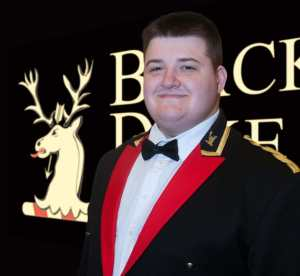

Born in Abergavenny and raised in Rhymney in the valleys of South Wales, Daniel effectively started his musical association with brass bands when he signed up for peripatetic brass lessons in Blaenau Gwent at Abertillery Comprehensive.
His first band was the now reformed Ebbw Vale Town Band, a local fourth section band who regularly came recruiting into local schools.
Daniel competed in his first National Finals in 2009, aged just fifteen sitting on principal euphonium. 2009 was also the year that he successfully auditioned for the National Youth Brass Band of Wales and worked with such distinguished musicians as Stephen Cobb, Nicholas Childs, and Edward Gregson.
In 2010, he won the local ‘Caerphilly Young Musician of The Year’ competition, beating 140 musicians from schools throughout South Wales. 2010 was also the year that Daniel joined the Cory Band, spending a fulfilling year in the band before sadly leaving due to academic commitments. He transferred to play for local rivals, Tredegar and is very proud to have participated in the band’s British Open win of 2013, scooping up the Best Euphonium prize for good measure.
Following another spell with the Cory Band, he moved to Manchester to study at the Royal Northern College of Music. He joined the Black Dyke Band, taking over from Ian Yates as the band’s second euphonium. Since starting his studies in Manchester, Daniel has participated in and won both the BBC Radio 2 Young Brass Award and the Euphonium Artist Competition at the ITEC (International Tuba Euphonium Conference) festival, held in Knoxville, Tennessee.
He became Black Dyke’s Solo Euphonium in December 2016, occupying the seat previously held by many of his playing idols, such as Morgan Griffiths, David Thornton, Robert Childs, John Clough, and Gary Curtin. In 2017, Daniel won the Best Instrumentalist prize at the Yorkshire Regional Championships and in 2019, he was awarded the Geoff Whitham award as the outstanding euphonium player at the British Open Championships. In 2020, Daniel graduated from the RNCM with a Distinction in his Master’s degree.
Complementing his playing career, he currently works as a Performance and Development Artist for the Geneva Instruments Group.
